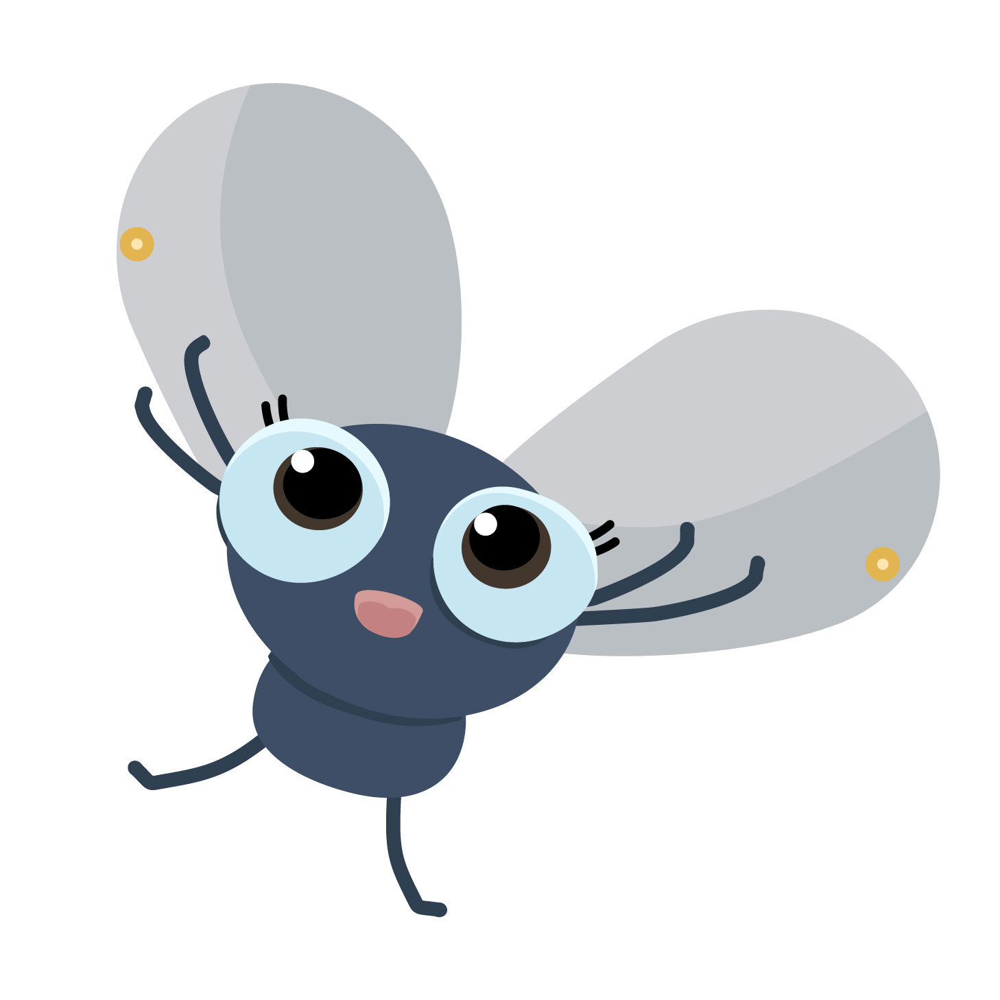
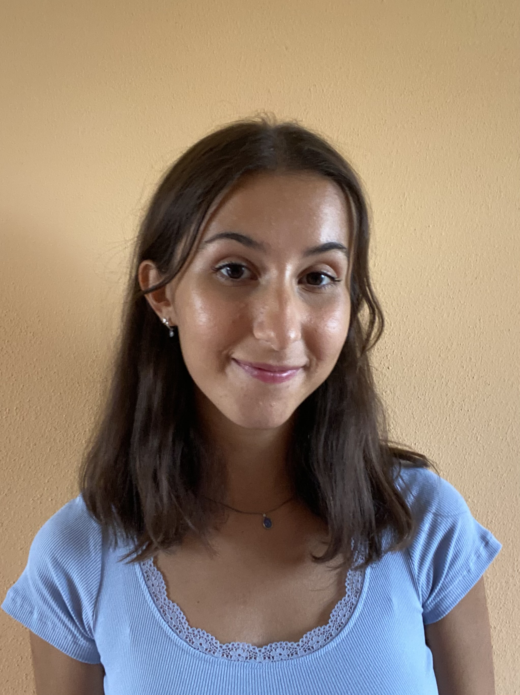
Caterina Gallo
Visual Design &
Front-end Development
- Research and background study
- Font and color palette selection
- Visual style definition
- Illustration design
- Content Refinement and Copywriting
- HTML, CSS, JavaScript (Intro section)
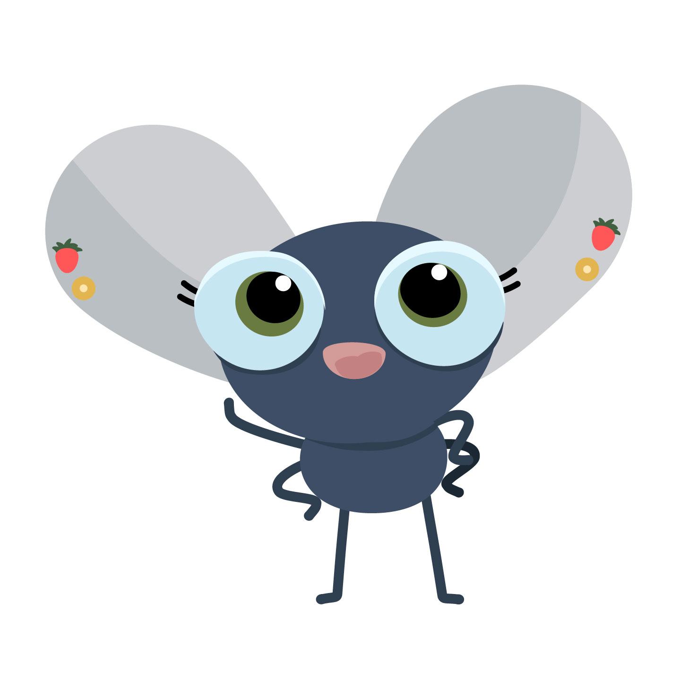
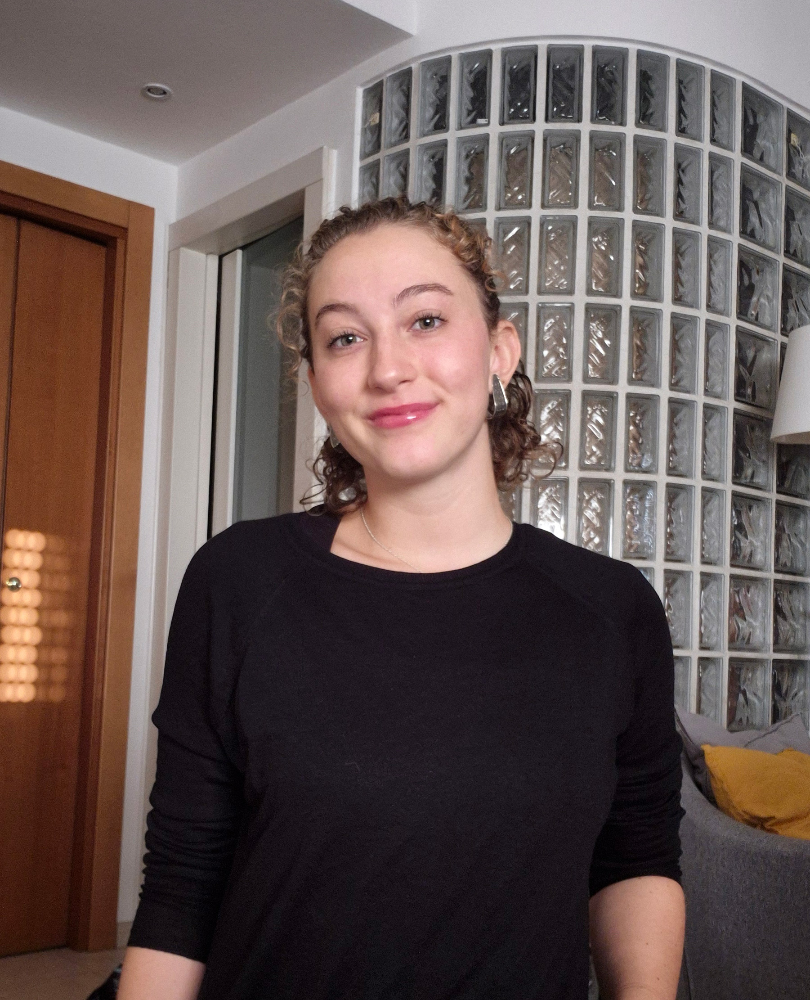
Giulia Furlani
Visual Design
& Concept Development
- Research and analysis
- Concept development
- Prototyping and mockups (Figma)
- Font and color palette selection
- Illustration design
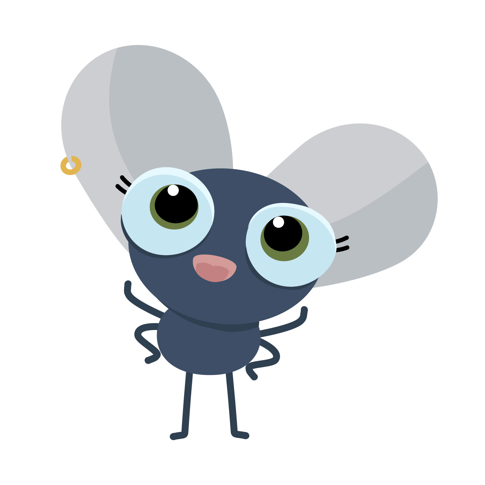
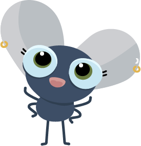
Irene Massignani
Data Design &
Front-end Development
- Dataset synthesis and simplification
- Concept development
- Visual style definition
- Prototyping and mockups (Figma)
- Animations
- HTML, CSS, JavaScript (Data & About pages)
- Project coherence verification
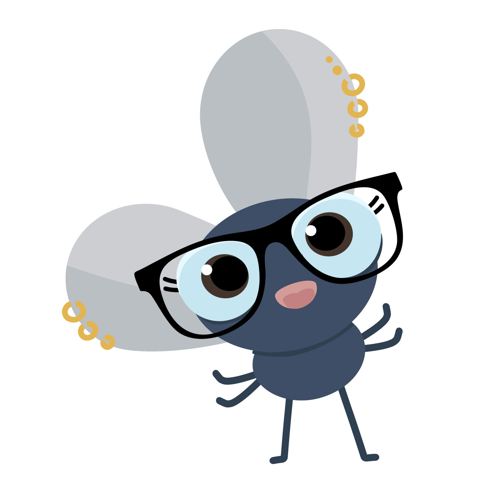
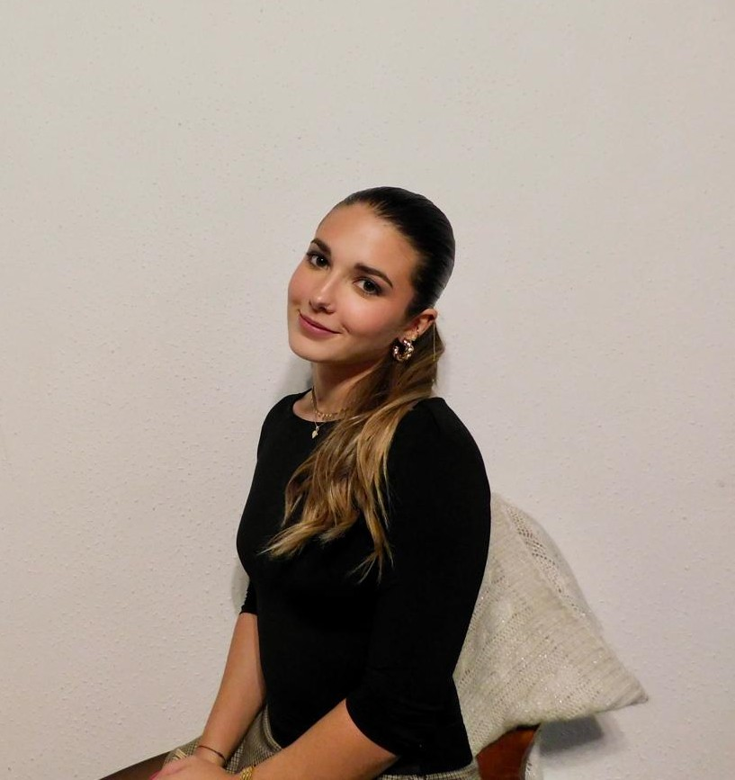
Rebecca Sole Bassani
Information Design &
Front-end Development
- Definition of knowledge objectives
- Concept development
- Visual style definition
- Sitemap and user flow
- Copywriting and README writing
- HTML, CSS, JavaScript (Intro, Header, Footer, Data & About)
- Project coherence verification
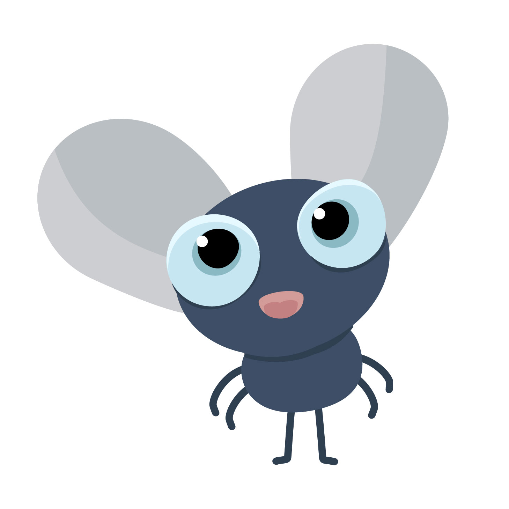
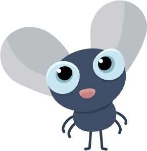
Stefano Lorini
Creative Coding
& UX/UI Design
- Core website development (HTML, CSS, JavaScript)
- Main page development (p5.js)
- Debugging and problem solving
- UX/UI design
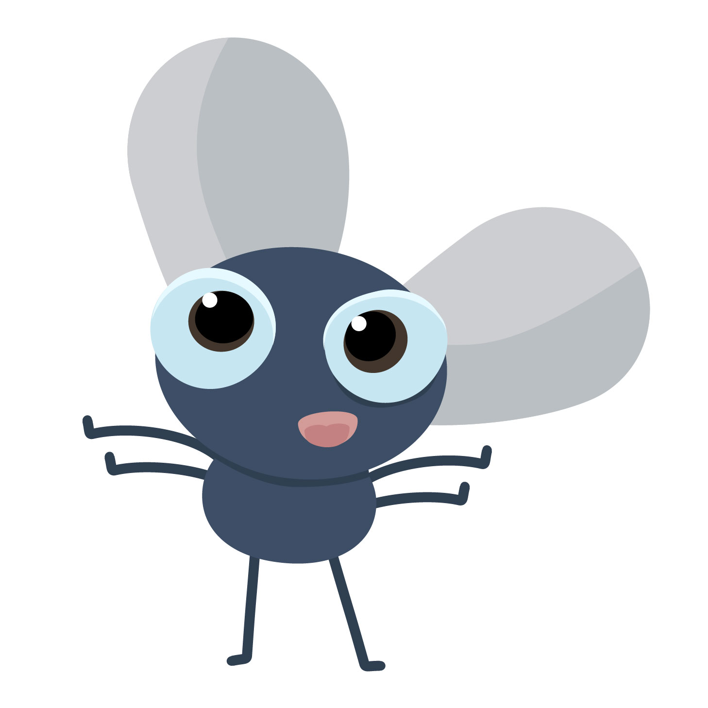

Tommaso Barazzetta
Creative Coding
& UX/UI Design
- Core website development (HTML, CSS, JavaScript)
- Detail page development (p5.js)
- Debugging and problem solving
- UX/UI design